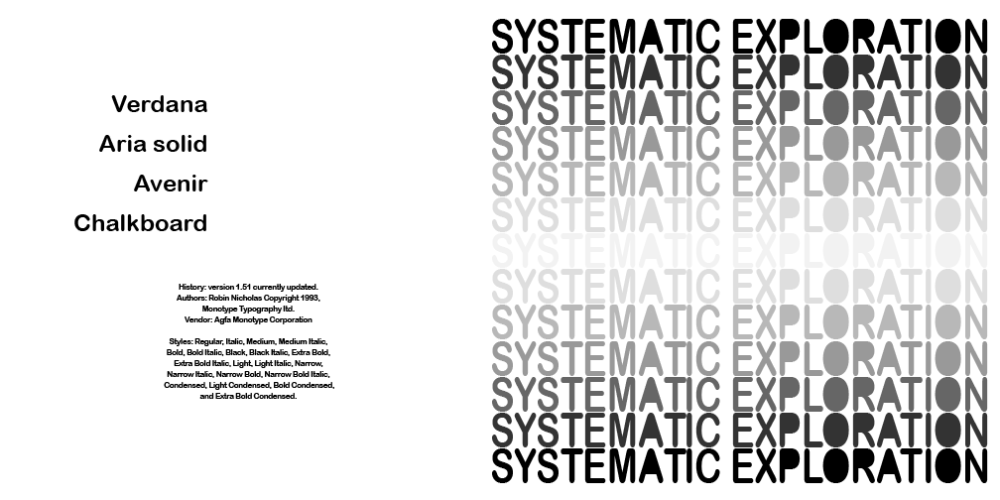
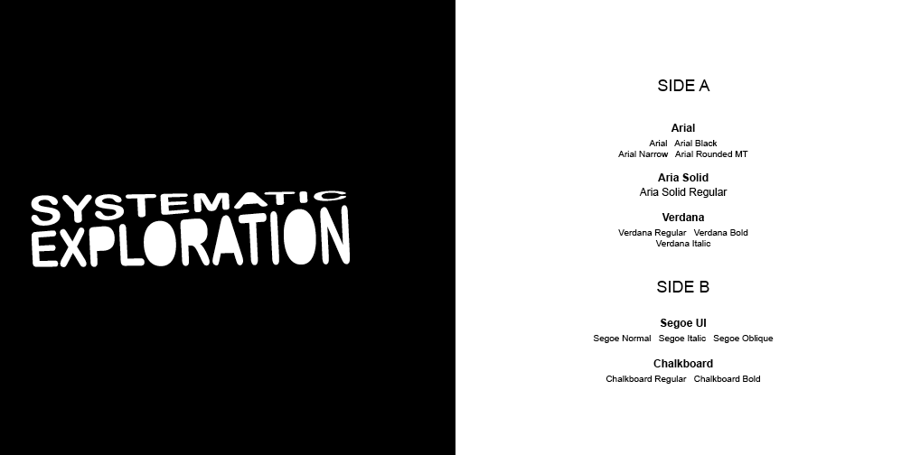
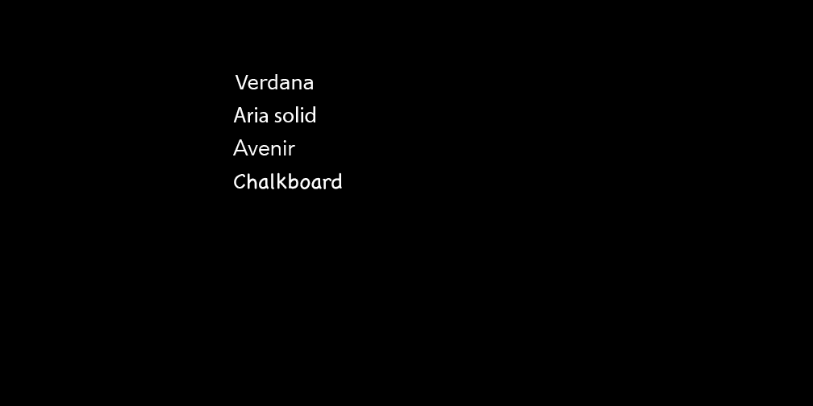

Version 1.51 currently updated.
Authors: Robin Nicholas Copyright 1993, Monotype Typography Itd.
Vendor: Agfa Monotype Corporation
History: version 1.51 currently updated.
Authors: Robin Nicholas Copyright 1993,
Monotype Typography Itd.
Vendor: Agfa Monotype Corporation
Styles: Regular, Italic, Medium, Medium Italic,
Bold, Bold Italic, Black, Black Italic, Extra Bold,
Extra Bold Italic, Light, Light Italic, Narrow,
Narrow Italic, Narrow Bold, Narrow Bold Italic,
Condensed, Light Condensed, Bold Condensed,
and Extra Bold Condensed.

Systematic Exploration repetition with centered gradient for the cover is optically amusing, given my fallback fonts on the backside as well as a history of my chosen font, Arial Rounded Mt Bold.

Inside slip, features some text warping with "systematic exploration" holding strong to the 2D black and white aesthetic that the album has. Backside consists of Side A and Side B to the record.

White text on the black background is to help push the 2D feeling that is held throughout the album. The white type reads through the vellum slip that goes over this. Backside has a gradient of just black to white for visual effect.